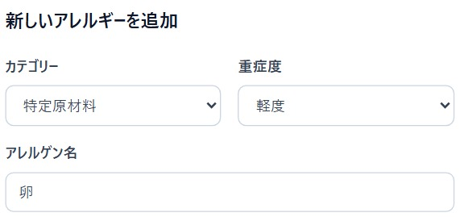
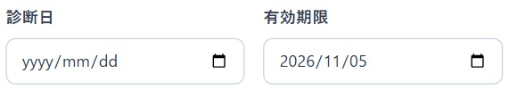
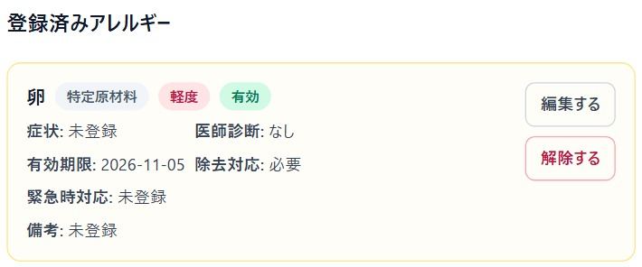
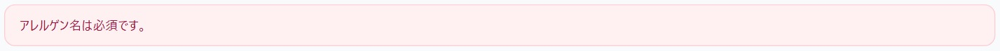
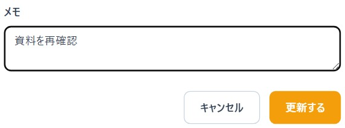

アレルギーを登録する・直す・解除する
健康サマリーで「アレルギー管理」を押します。園で確認した資料を手元に置き、園児の名前を確かめて入力します。
画面は架空の園児の記録です。画像を押すと大きく見られます。
1品目と有効期限を入れる
「新しいアレルギーを追加」で「カテゴリー」「重症度」を確かめ、「アレルゲン名」に品目などの名前を書きます。症状や除去対応は、資料の内容に合わせて入力します。
期限があるときは「有効期限」に日付を入れます。「根拠文書」には園で確認した資料の名前を書けます。


2追加した内容を確かめる
「追加する」を押し、「登録済みアレルギー」に品目が出たことを確かめます。「アレルゲン名は必須です。」と出たら、品目を入れてもう一度「追加する」を押します。


「有効期限」を過ぎても「有効」の登録に残ります。期限の日付と園で確認した資料を見合わせてください。
3同じ品目の内容を直す
「登録済みアレルギー」で、直したい品目の「編集する」を押します。内容を直して「更新する」を押します。変更をやめるときは「キャンセル」を押します。

4解除した品目を確認する
園で解除が決まったら、品目を確かめて「解除する」を押します。その品目は「解除済み」として登録一覧に残ります。もう一度有効にする必要があるときは、その品目の「再有効化する」を押します。